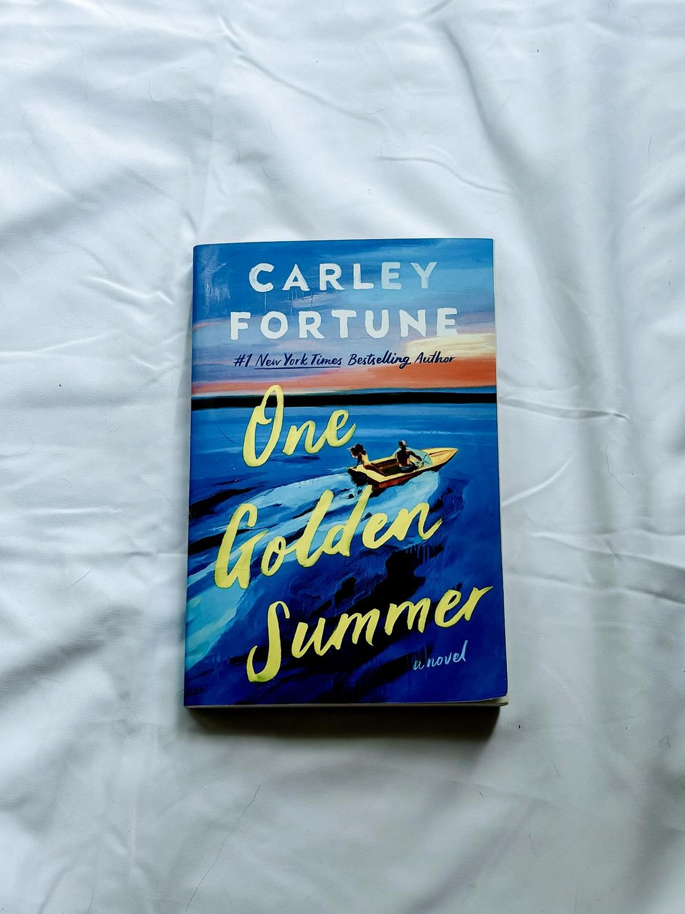

One Golden Summer
Carley Fortune
Alice pasó un verano inolvidable junto a su abuela Nan cuando tenía diecisiete años. Fue allí donde tomó una fotografía que terminaría cambiando su carrera como fotógrafa. Años después, cuando Nan se lastima, Alice decide regresar con ella a Barry's Bay para pasar otro verano en el lago. Allí vuelve a encontrarse con Charlie, el joven que había fotografiado años atrás. Entre recuerdos, días de verano y una atracción inesperada, Alice comienza a descubrir que quizás también necesita ser protagonista de su propia vida.